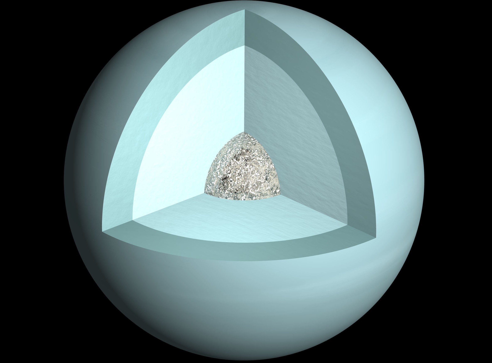

Уран

Треть радиуса Урана (примерно 8000 км) – газ. На данный момент у него обнаружено 27 спутников. Каждый полюс 42 земных года находится в полной темноте — и ещё 42 года под солнечным светом. Уран является самой холодной планетой, температура здесь в среднем -224°C.